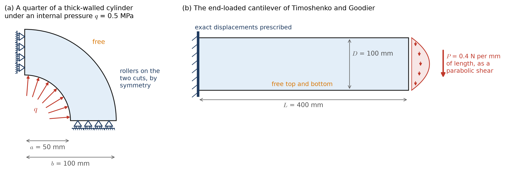
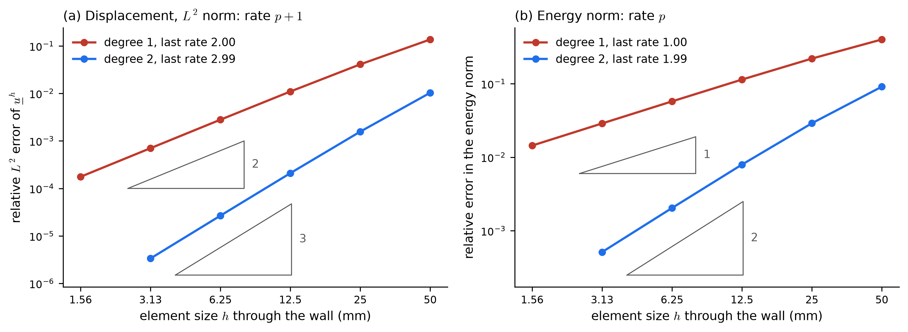
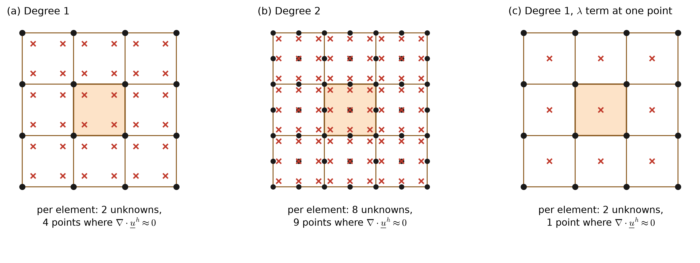
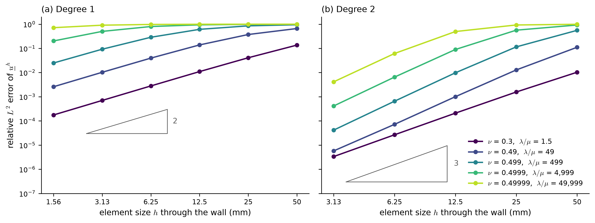
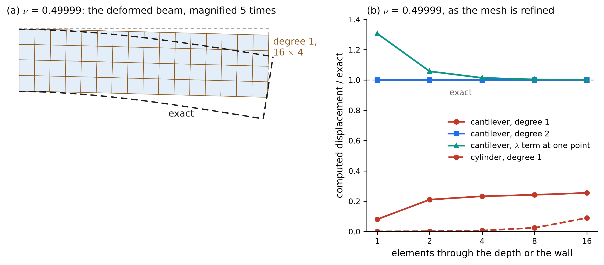

| Elements through the depth | Mesh | Deflection / exact | Change from the previous mesh | Relative \(L^2\) error |
|---|---|---|---|---|
| 1 | 4 × 1 | 0.080 | 90% | |
| 2 | 8 × 2 | 0.210 | +161.7% | 76% |
| 4 | 16 × 4 | 0.232 | +10.5% | 74% |
| 8 | 32 × 8 | 0.242 | +4.1% | 73% |
| 16 | 64 × 16 | 0.255 | +5.2% | 72% |
30 Class 30: Convergence and Volumetric Locking
The error estimates of Classes 17 and 18 for elasticity, and what happens to them as a material becomes nearly incompressible
In Class 17 and Class 18, the finite element solution of the Poisson Equation was shown to converge to the exact solution at a rate set by the polynomial degree because of the so-called Galerkin orthogonality of finite element methods. This class first revisits those results for elasticity, where they hold with few changes. It then turns to a case in which the estimate still holds but is of little practical use: a material that is nearly incompressible, such as rubber. For such a material, the elements of the previous classes can be far too stiff, which is called volumetric locking.
30.1 Convergence, revisited
30.1.1 Measuring the error of a displacement
The error is now a vector field, \(\underline{e} = \underline{u} - \underline{u}^h\), and its norms add up the contributions of its components. The norms of Class 17 become
\[ \|\underline{e}\|_{L^2}^2 = \int_\Omega e_i\,e_i\;d\Omega, \qquad \|\underline{e}\|_{H^1}^2 = \int_\Omega e_i\,e_i + e_{i,j}\,e_{i,j}\;d\Omega, \]
with sums over the repeated indices, so that in two dimensions \(e_i\,e_i = e_0^2 + e_1^2\), and \(e_{i,j}\,e_{i,j}\) adds the squares of all four derivatives. The energy norm of Class 18 uses the bilinear form of Class 28,
\[ \|\underline{e}\|_E^2 = a(\underline{e}, \underline{e}) = \int_\Omega \underline{\epsilon}(\underline{e})^T\,\underline{\underline{D}}\;\underline{\epsilon}(\underline{e})\;d\Omega , \]
which is twice the strain energy that the error would store. Each norm is computed element by element with Gaussian quadrature, as in Class 17. The exact solution is evaluated at the physical location \(\underline{x}^e(\underline{\xi}_q)\) of each quadrature point, and more points are used than the stiffness matrix needs, because the error is not a polynomial. The errors below are relative errors, such as \(\|\underline{e}\|_{L^2}/\|\underline{u}\|_{L^2}\), so that they do not depend on the units.
30.1.2 The a priori estimate
The a priori estimate is unchanged. For a sufficiently smooth exact solution and elements of degree \(p\) (written \(k\) in Class 17),
\[ \|\underline{e}\|_{H^s} \leq C\,h^{\,p+1-s}\,\|\underline{u}\|_{H^{p+1}} , \]
so the displacements converge at the rate \(p+1\) in the \(L^2\) norm, and the strains and stresses, through the \(H^1\) and energy norms, at the rate \(p\). The rate is measured as before, by halving \(h\) and taking the base-2 logarithm of the ratio of successive errors.
The constant \(C\) does not depend on \(h\) or on \(\underline{u}\). It does depend on the domain, the degree, the shapes of the elements, and the coefficients of the problem, which for an isotropic material are \(E\) and \(\nu\). That last dependence is the subject of most of this class.
30.1.3 Galerkin orthogonality and Céa’s lemma
The argument of Class 18 used only two properties of the bilinear form: that it is symmetric, and that \(a(\underline{v}, \underline{v}) > 0\) for every admissible \(\underline{v} \neq \underline{0}\). Both hold in elasticity. The form is symmetric because \(\underline{\underline{D}}\) is symmetric. It is positive because \(\underline{\underline{D}}\) is positive definite and, by Korn’s inequality in Class 29, only a rigid-body motion has no strain, and the supports exclude those. Galerkin orthogonality then follows word for word,
\[ a(\underline{u} - \underline{u}^h,\; \underline{w}^h) = 0 \qquad \text{for all } \underline{w}^h \in \mathcal{V}^h , \]
and so does Céa’s lemma,
\[ \left\|\underline{u} - \underline{u}^h\right\|_E \leq \left\|\underline{u} - \underline{w}^h\right\|_E \qquad \text{for every } \underline{w}^h \in \mathcal{V}^h . \]
The finite element displacement is the best approximation in its space, measured in the energy norm. Choosing \(\underline{w}^h\) to be the interpolant of \(\underline{u}\) and applying the Bramble–Hilbert lemma to each component then gives the estimate above.
30.1.4 Exact solutions for checking convergence
As in Class 18, an exact solution can be manufactured for any body by choosing the displacement first and computing the data that it satisfies:
- Choose a displacement field \(\underline{u}(\underline{x})\) that can be differentiated twice.
- Compute its strains, the stresses \(\sigma_{ij}\) from Hooke’s law of Class 27, and the body force that balances them, \(f_i = -\sigma_{ij,j}\).
- Prescribe \(g_i = u_i\) on \(\Gamma_{g_i}\), and the tractions \(h_i = \sigma_{ij}\,n_j\) on \(\Gamma_{h_i}\).
A few problems also have exact solutions without a body force, both of which involve plane strain (Figure 30.1). The first is a long thick-walled cylinder, such as a hose or a pipe, with inner radius \(a\), outer radius \(b\), and an internal pressure \(q\). The pressure is written \(q\) here to clarify that it is not the polynomial degree, which to this point we have written using \(p\). Its displacement is radial, and Lamé’s solution gives
\[ u_r(r) = \frac{(1+\nu)\,q\,a^2}{E\left(b^2 - a^2\right)}\left((1 - 2\nu)\,r + \frac{b^2}{r}\right) . \]
By symmetry, only a quarter of the cylinder needs to be modeled, with rollers on the two cuts, as in Class 29. The second is the end-loaded cantilever of Timoshenko and Goodier from the first elasticity appendix, with the exact displacements prescribed on its left end and a parabolic shear traction on its right end. Both use \(E\) = 10 MPa, which is typical of a soft rubber; \(E\) only scales the displacements, and \(\nu\) is varied below.

30.1.5 A convergence study
Figure 30.2 shows the errors in the cylinder at \(\nu = 0.3\), on meshes with \(n\) elements through the wall and \(2n\) around the quarter, for \(n = 1, 2, 4, \ldots\) The elements approximate the circular boundaries, with straight sides at degree 1 and parabolic sides at degree 2, and this approximation does not reduce the rates. The measured rates on the finest meshes are 2.00 and 2.99 in the \(L^2\) norm, and 1.00 and 1.99 in the energy norm. These are \(p+1\) and \(p\), as for the Poisson Equation.

30.2 Nearly incompressible materials
30.2.1 Volume change and the bulk modulus
For small strains, the divergence of the displacement, \(\nabla\cdot\underline{u} = u_{i,i} = \varepsilon_{kk}\), is the change in volume per unit volume. In plane strain, \(\varepsilon_{22} = 0\), so \(\nabla\cdot\underline{u} = u_{0,0} + u_{1,1}\). The mean of the three normal stresses is proportional to it,
\[ \frac{\sigma_{00} + \sigma_{11} + \sigma_{22}}{3} = \left(\lambda + \tfrac{2}{3}\mu\right)\nabla\cdot\underline{u} = K\,\nabla\cdot\underline{u}, \]
where \(K\) is called the bulk modulus. In terms of \(E\) and \(\nu\),
\[ K = \frac{E}{3\,(1 - 2\nu)}, \qquad \mu = \frac{E}{2\,(1 + \nu)}, \qquad \frac{\lambda}{\mu} = \frac{2\nu}{1 - 2\nu} . \]
As \(\nu\) approaches \(\tfrac{1}{2}\), \(K\) and \(\lambda\) grow without bound, while \(\mu\) approaches \(E/3\).
| \(\nu\) | 0.3 | 0.45 | 0.49 | 0.499 | 0.4999 | 0.49999 |
|---|---|---|---|---|---|---|
| \(\lambda/\mu\) | 1.5 | 9 | 49 | 499 | 4,999 | 49,999 |
A material with \(\nu\) close to \(\tfrac{1}{2}\) is called nearly incompressible. Examples are rubber and other elastomers, with \(\nu\) of about 0.4995 or more, and soft biological tissue. Water-saturated soils behave in the same way when they are loaded faster than the water can drain, and metals do during plastic flow, which is beyond the scope of this course. In such a material, a finite mean stress produces almost no change in volume, since \(\nabla\cdot\underline{u}\) is the mean stress divided by \(K\).
30.2.2 The volumetric term in the weak form
The plane strain elasticity matrix of Class 27 splits into a part with \(\mu\) and a part with \(\lambda\),
\[ \underline{\underline{D}} = \begin{bmatrix} \lambda + 2\mu & \lambda & 0 \\ \lambda & \lambda + 2\mu & 0 \\ 0 & 0 & \mu \end{bmatrix} = \underbrace{\mu\begin{bmatrix} 2 & 0 & 0 \\ 0 & 2 & 0 \\ 0 & 0 & 1 \end{bmatrix}}_{\underline{\underline{D}}_\mu} + \;\lambda\,\underline{m}\,\underline{m}^T, \qquad \underline{m} = \begin{bmatrix} 1 \\ 1 \\ 0 \end{bmatrix} , \]
and since \(\underline{m}^T\underline{\epsilon}(\underline{u}) = u_{0,0} + u_{1,1} = \nabla\cdot\underline{u}\), the bilinear form splits in the same way:
\[ a(\underline{w}, \underline{u}) = \int_\Omega \underline{\epsilon}(\underline{w})^T\,\underline{\underline{D}}_\mu\;\underline{\epsilon}(\underline{u})\;d\Omega + \int_\Omega \lambda\,\left(\nabla\cdot\underline{w}\right)\left(\nabla\cdot\underline{u}\right)d\Omega . \]
As \(\lambda\) grows, the second integral acts like the stiff spring of the penalty method in Class 29. It permits a change in volume only at a large cost in energy, and so it enforces \(\nabla\cdot\underline{u} \approx 0\), with an error proportional to \(1/\lambda\). The product \(\lambda\,\nabla\cdot\underline{u}\) stays finite. In plane strain it is exactly the stress along the length of the body, \(\sigma_{22} = \lambda\left(\varepsilon_{00} + \varepsilon_{11}\right)\), from Class 27.
The exact solutions are well behaved as \(\nu\) approaches \(\tfrac{1}{2}\). The inner surface of the cylinder moves out 4.77 mm at \(\nu = 0.3\) and 5.00 mm at \(\nu = 0.49999\), and the tip of the cantilever moves down 9.77 mm and 8.22 mm.
30.3 Volumetric locking
30.3.1 What goes wrong in the discrete problem
The finite element solution is subject to the same near-constraint, but it can satisfy it only with the fields its space contains, and only where the \(\lambda\) integral is evaluated: at the quadrature points. With the full quadrature used so far, \(\nabla\cdot\underline{u}^h\) must be nearly zero at every quadrature point of every element.
Figure 30.3 compares the number of these points with the number of unknowns. In a large mesh of degree-1 elements, each element adds about one node, and so two unknowns, but four quadrature points. Degree-2 elements add about four nodes, or eight unknowns, and nine points. Hughes (Chapter 4) calls the ratio of unknowns to constraints the constraint ratio. The continuous problem has two displacement components and one constraint at each point, a ratio of 2. A ratio below 1, as for degree 1 with four points, suggests that the elements will lock. The count is a rule of thumb rather than a proof, but the results below follow it.

When the constraints outnumber the unknowns, the only fields that satisfy them are very restricted. As \(\lambda/\mu\) grows on a fixed mesh, the finite element solution approaches the best fit among those restricted fields, which is often a poor fit. The elements become far too stiff and hardly move, which is why they are said to lock.
In the terms of Class 18, Céa’s lemma still holds: \(\underline{u}^h\) is still the best approximation in the energy norm. That norm, however, now contains \(\int_\Omega \lambda\left(\nabla\cdot\underline{e}\right)^2 d\Omega\). When \(\lambda\) is very large, the best approximation is the one that keeps \(\nabla\cdot\underline{u}^h\) small at the quadrature points, whatever that costs in the displacement itself. Converting the statement about the energy norm into one about the displacement brings in the ratio \(\lambda/\mu\), and the constant \(C\) in the estimate for the displacement grows without bound as \(\nu\) approaches \(\tfrac{1}{2}\). The rate is unchanged. What changes is how small the elements must be before the error begins to fall at that rate.
Figure 30.4 shows this for the cylinder. At \(\nu = 0.3\), the error of the degree-1 elements falls at the rate 2 from the coarsest mesh. As \(\nu\) approaches \(\tfrac{1}{2}\), the error stays near 100% on the coarse meshes, and it begins to fall only once the elements are small enough, eventually at the same rate. Each tenfold increase in \(\lambda/\mu\) moves the start of that decline to elements about three times smaller, close to \(\sqrt{10}\). At \(\nu = 0.49999\), even the finest mesh of degree-1 elements, 32 × 64 with 4,224 unknowns, has an error of 72%. Degree 2 also locks on the coarsest meshes, but it recovers on much coarser meshes than degree 1.

30.4 Volumetric locking, interactively
The widget below solves both problems of Figure 30.1, in plane strain, for any \(\nu\), with three kinds of elements, and compares every result with the exact solution.
- Use the buttons to choose the problem and the elements, and the sliders to choose \(\nu\) and the mesh. The meshes have \(n = 1, 2, 4, 8,\) or 16 elements through the depth of the cantilever, with \(4n\) along its length, or through the wall of the cylinder, with \(2n\) around the quarter.
- The upper panel shows the deformed mesh, magnified, with the exact deformed shape dashed and the undeformed outline in gray. The colors show \(\lambda\,\nabla\cdot\underline{u}^h\), which in plane strain is \(\sigma_{22}\), at each quadrature point of each element, or at the center for the third kind of element. The exact \(\sigma_{22}\) varies linearly along and through the cantilever, and it is uniform in the cylinder.
- The lower panels show, for all three kinds of element and every mesh, the computed displacement divided by the exact one, and the relative \(L^2\) error. The displacement is the deflection at the middle of the cantilever’s tip, or the radial displacement of the cylinder’s inner surface at 45°.
- The third kind of element, “degree 1, \(\lambda\) term at one point,” is described in the section on mitigating locking below.
- Every solution is computed in your browser when \(\nu\) or the problem changes.
30.4.1 Things to try
- With the cantilever and degree 1 on 16 × 4 elements, move \(\nu\) from 0 to 0.49999. The exact deflection decreases from 10.6 mm to 8.2 mm, but the computed deflection falls to under a quarter of the exact value.
- At \(\nu = 0.49999\), refine the degree-1 mesh from two to sixteen elements through the depth. The computed deflection changes by 10% or less at each step, but it stays near a quarter of the exact value.
- Switch to degree 2, or to degree 1 with the \(\lambda\) term at one point. Degree 2 is essentially exact on every mesh, and the other is within 6% with two elements through the depth.
- Switch to the cylinder at \(\nu = 0.49999\). Each refinement of the degree-1 mesh multiplies the displacement by about four. Degree 2 also locks on the coarsest meshes, reaching 0.07 of the exact displacement on 2 × 4 elements and 0.50 on 4 × 8.
- Watch the colors. For degree 1 at large \(\nu\), \(\lambda\,\nabla\cdot\underline{u}^h\) jumps in sign from one quadrature point to the next, while the deformed shape looks smooth. For degree 2 on the cylinder, it oscillates even on the finer meshes, where the displacement is accurate, and only the third kind of element gives the uniform exact value.
- Set \(\nu = 0\), with degree 1 and one element through the depth of the cantilever. With \(\lambda = 0\) there is no volumetric locking, yet the deflection is only 67% of the exact value; this is a different kind of locking, described at the end of this class.
30.5 Locking can look like convergence
In the cylinder, locking is easy to see. Each refinement multiplies the displacement by about four, and the answer is clearly not converged. The cantilever is more misleading. Table 30.2 shows its tip deflection at \(\nu = 0.49999\) with degree-1 elements.
From two to four to eight elements through the depth, the deflection changes by 10.5% and then by 4.1%. The deformed shape in Figure 30.5 a looks like a bent beam, only a stiffer one, and nothing in the output warns that anything is wrong. A mesh study that refines until the answer changes by less than 5% would stop at eight elements through the depth, at about a quarter of the correct deflection. The relative \(L^2\) error, which is known only because the exact solution is, stays above 70% throughout.
The beam settles because of what degree-1 elements can do without changing their volume at their quadrature points. They can shear: a rectangle that becomes a parallelogram keeps its area. They cannot bend without changing volume, however. In a nearly incompressible material, the stretching of the fibers on one side of the beam and their shortening on the other must be matched by an opposite strain across the depth, which varies through the depth. That requires a displacement across the depth that is quadratic, and a degree-1 element has no quadratic terms. The locked beam therefore deflects mainly by shearing its elements, and each refinement adds only a little bending.

Verification does not catch locking either. The code that produced these numbers converges at the expected rates at \(\nu = 0.3\) (Figure 30.2), so it passes the test of Class 18. Locking is a property of the method, not a mistake in the code, and verification only asks whether the equations were solved correctly.
There are several practical signs of locking:
- A different kind of element disagrees. Compare against elements of a higher degree or a formulation designed to avoid locking, not against a finer mesh of the same elements. For the cantilever, degree 2 is within 0.01% of the exact deflection with one element through the depth, while degree 1 with sixteen is still at 0.25 of it.
- The answer is much more sensitive to \(\nu\) than the physics is. Solve again with a somewhat smaller \(\nu\), such as 0.45. The exact tip deflection changes only from 8.68 mm to 8.22 mm between \(\nu = 0.45\) and 0.49999, but the degree-1 deflection on 16 × 4 elements falls from 7.71 mm to 1.91 mm.
- The volumetric stress oscillates. In a locked solution, \(\lambda\,\nabla\cdot\underline{u}^h\) often changes sign from one quadrature point to the next, in a checkerboard pattern, even where the displacements look smooth, as the colors in the widget show. The converse does not hold. Since \(\lambda\,\nabla\cdot\underline{u}^h\) is a small divergence multiplied by a large \(\lambda\), it can oscillate even when the displacements are accurate. For degree 2 on the cylinder at \(\nu = 0.4999\), with 16 × 32 elements, the displacement is within 0.1% of the exact value, but \(\lambda\,\nabla\cdot\underline{u}^h\) ranges from −1.3 to 1.4 MPa, while the exact \(\sigma_{22}\) is 0.17 MPa everywhere. The stresses in a nearly incompressible material should therefore be computed with one of the remedies below, even when the displacements have converged.
30.6 Mitigating volumetric locking
30.6.1 Refining the mesh
Since the rate is unchanged, refining the mesh eventually works for any \(\nu\) less than \(\tfrac{1}{2}\). The elements must become small compared with roughly \(\sqrt{\mu/\lambda}\) times the size of the body, however, and that can be very small. In the cylinder at \(\nu = 0.49999\), degree 1 on 32 × 64 elements, with 4,224 unknowns, still gives only 0.28 of the exact displacement. For \(\nu = \tfrac{1}{2}\) itself, \(\lambda\) is infinite, and the displacement formulation cannot be used at all.
30.6.2 Raising the degree
Raising the degree is much more effective. The ratio of unknowns to constraints is closer to balanced (Figure 30.3), and polynomials of higher degree can represent more of the fields that keep their volume, such as the bending of the cantilever. In the cylinder at \(\nu = 0.4999\), degree 2 on 8 × 16 elements, with 1,088 unknowns, is within 1% of the exact displacement (0.994). Degree 1 on 32 × 64 elements, with almost four times as many unknowns, is still 20% low. Degree 3 reaches 0.977 on 2 × 4 elements, with 168 unknowns. Higher degrees still lock on the coarsest meshes, however: degree 3 on a 1 × 2 mesh gives 0.60, and degree 2 gives 0.07. Raising the degree shortens the range of locked meshes rather than removing it.
30.6.3 Special elements and mixed methods
Since the trouble lies in the \(\lambda\) integral, one remedy is to evaluate that integral with fewer quadrature points than the rest of \(\underline{\underline{k}}^e\), which is called selective reduced integration. For degree 1, the \(\mu\) part keeps its \(2 \times 2\) points, and the \(\lambda\) part is evaluated at the element center only,
\[ \underline{\underline{k}}^e = \sum_{q=0}^{3} \underline{\underline{B}}^T\,\underline{\underline{D}}_\mu\,\underline{\underline{B}}\;J\;W_q\,\Big|_{\underline{\xi}_q} \; + \;\lambda\,\left(\underline{\underline{B}}^T\underline{m}\right)\left(\underline{m}^T\underline{\underline{B}}\right)J\;W\,\Big|_{\underline{\xi} = \underline{0}} , \]
where \(W = 4\) is the weight of the one-point rule, the area of the parent square. Each element then imposes one constraint for two unknowns (Figure 30.3 c), and in the widget this element shows no locking at any \(\nu\). Hughes’s B-bar method generalizes the idea to other elements by replacing the divergence in \(\underline{\underline{B}}\) by its average over the element. Evaluating all of \(\underline{\underline{k}}^e\) at the center is not a remedy. That leaves deformations with no strain at the center, called hourglass modes, which store no energy and appear in the solution as spurious zigzag displacements.
A second remedy changes the formulation. In a mixed method, the volumetric stress \(\sigma_v = \lambda\,\nabla\cdot\underline{u}\) becomes a second unknown field, with its own basis functions, and the relation between them becomes a second equation. For every weighting function \(\underline{w}\) of the displacement and \(\psi\) of the volumetric stress,
\[ \begin{aligned} \int_\Omega \underline{\epsilon}(\underline{w})^T\,\underline{\underline{D}}_\mu\;\underline{\epsilon}(\underline{u})\;d\Omega + \int_\Omega \left(\nabla\cdot\underline{w}\right)\sigma_v\;d\Omega &= (\underline{w}, \underline{f}) + (\underline{w}, \underline{h})_\Gamma , \\ \int_\Omega \psi\left(\nabla\cdot\underline{u} - \frac{\sigma_v}{\lambda}\right)d\Omega &= 0 . \end{aligned} \]
The large coefficient no longer multiplies the displacements. As \(\lambda\) approaches infinity, the second equation simply becomes \(\int_\Omega \psi\,\nabla\cdot\underline{u}\;d\Omega = 0\), so even a fully incompressible material can be modeled. The matrix equations are still symmetric, but they are no longer positive definite (Class 23), and not every pair of bases works. The bases for the displacement and the volumetric stress must satisfy a compatibility condition called the inf–sup or LBB condition. Biquadratic displacements with bilinear, continuous stresses (the Taylor–Hood element) satisfy it. Bilinear displacements with a constant stress in each element do not, and their stresses can oscillate in a checkerboard pattern. On elements that are parallelograms, this pair gives the same displacements as selective reduced integration.
Many other elements have been designed to avoid locking, such as elements with incompatible modes and enhanced assumed strain elements, which add internal deformation modes to each element. Commercial programs commonly provide mixed elements for rubber, often under the name hybrid elements.
30.6.4 Plane stress does not lock
In plane stress, \(\lambda\) is replaced by \(\bar{\lambda} = 2\lambda\mu/(\lambda + 2\mu)\) (Class 27), which approaches \(2\mu\) as \(\lambda\) grows. A thin plate can change its volume by changing its thickness, so its in-plane displacements are not constrained, and plane stress models do not lock. Volumetric locking is a concern in plane strain, in axisymmetric models, and in three dimensions.
30.7 Other kinds of locking
Volumetric locking is one case of a general pattern. A term in the energy with a large coefficient imposes a constraint, and a discrete space that cannot satisfy the constraint without distorting everything else becomes too stiff.
- Shear locking occurs in beam, plate, and shell elements that include shear deformation, such as Timoshenko beams and Reissner–Mindlin plates. As the thickness \(t\) decreases, the shear stiffness grows relative to the bending stiffness, in proportion to \((L/t)^2\), and the shear strain must approach zero. Elements of low degree cannot bend without also shearing, so they become too stiff as \(t\) decreases. Degree-1 elements in plane elasticity show the same effect in bending, sometimes called parasitic shear: at \(\nu = 0\), where the \(\lambda\) term vanishes, the cantilever with one degree-1 element through the depth reaches only 67% of the exact deflection.
- Membrane locking occurs in curved beams and shells. A thin curved structure bends far more easily than it stretches, so it bends with almost no stretching of its midsurface. Curved elements of low degree cannot bend without stretching, and they become too stiff.
Each of these depends on a theory of beams, plates, or shells, and has its own remedies, so they will not be further discussed here.
30.8 Summary
- The error measures, the a priori estimate, Galerkin orthogonality, and Céa’s lemma of Classes 17 and 18 carry over to elasticity unchanged. The displacements converge at the rate \(p+1\) in the \(L^2\) norm, and the strains and stresses at the rate \(p\).
- The constant in the estimate depends on \(\nu\). As \(\nu\) approaches \(\tfrac{1}{2}\), \(\lambda/\mu\) grows without bound, and the \(\lambda\) term in the weak form acts as a penalty that forces \(\nabla\cdot\underline{u} \approx 0\).
- With full quadrature, degree-1 elements have more such constraints than unknowns, and they lock: they are far too stiff until the mesh is very fine. The rate is unchanged, but the asymptotic range begins only at elements roughly \(\sqrt{\mu/\lambda}\) times the size of the body.
- Locking can look like convergence. In the cantilever, the computed deflection changes by only a few percent under refinement while remaining at about a quarter of the exact value, and the code still passes a verification test at \(\nu = 0.3\). Comparing against a different element, varying \(\nu\), and looking for oscillating volumetric stresses are practical checks.
- Refining the mesh helps slowly, raising the degree helps much more, and selective reduced integration, the B-bar method, and mixed methods remove volumetric locking. Plane stress does not lock.
- Shear locking and membrane locking arise in the same way in beams, plates, and shells, and are left to a treatment of those theories.